Život mimo obrazovku
Věda a ekologie
Účastnil jsem se skutečných archeologických vykopávek z období paleolitu v Brjanské oblasti, kde jsem se setkal se známým antropologem S. Drobyshevským. Také jsem si zahrál hlavní roli v sociálním spotu o důležitosti recyklace baterií a ochraně planety.
Hudba a umění
Moje maminka je kurátorkou v petrohradské Kunstkameře, takže mám blízko k muzeím a historii. 6 let jsem hrál na violoncello, několik let na klavír a chtěl bych se naučit na kytaru. Více než 10 let jsem také zpíval a koncertoval (i ve Finsku) s lidovým sborem "GromGora".
Fotografie
Dva roky jsem byl členem fotoklubu. Miluji osamocené cesty do přírody, kde fotím krajiny.
Sport a cestování
Udržuji se v kondici (chodím do posilovny, mám stříbrný odznak ruského programu fyzické zdatnosti GTO). Jezdil jsem na kajaku v Karélii a účastnil se cyklo-festivalu. Procestoval jsem mnoho zemí a mým snem je Japonsko.
Co mě baví:
Hry
- Firewatch
- Coffee Talk
- Chrono Trigger
- Metro (2033,Exodus)
- Max Payne (1,2)
- Mafia (1, 2)
- Half-Life (1,2,3?)
- Soma
- Witcher (1,2)
- GTA (3,VC,SA,4)
- Everlasting summer
- Cyberpunk 2077
- Euro Truck Simulator 2
- Final Fantasy (3,6,9)
- Pacific Drive
Anime
- Made in Abyss
- Mushishi
- Frieren
- Call of the Night
- The Apothecary Diaries
- Monogatari Series
- Princess Mononoke
- Kowloon Generic Romance
- Your Name
- Solo Camping for Two
- My Dress-Up Darling
Knihy
- J. Herriot: "Every Living Thing"
- F. Dostojevskij: "Crime and Punishment"
- D. Glukhovsky: "Metro 2033"
- L. Tolstoj: "Anna Karenina"
- B. Němcová: "Babička"
- A.B. Strugatsky: "Roadside Picnic"
- M. Bulgakov: "The Heart of a Dog"
- E. Remarque: "All Quiet on the Western Front"
- K. Sergienko: "Take Us Away, Pegasus!"
- H. Lee: "To Kill a Mockingbird"
Hudba
- Sabaton
- Powerwolf
- Ghost
- Faun
- Evanescence
- Akira Yamaoka
- Korol i Shut
- Yasunori Mitsuda
- Blind Guardian
- Pornofilmy
- Nightwish
- Grazhdanskaya Oborona
- Alestorm
- Korpiklaani
- Eluveitie
- Dio
- Alina Gingertail
- Melnitsa
- Oleg Medvedev
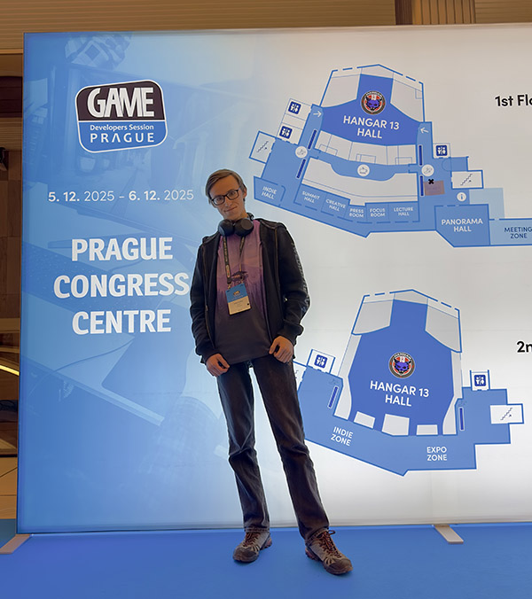
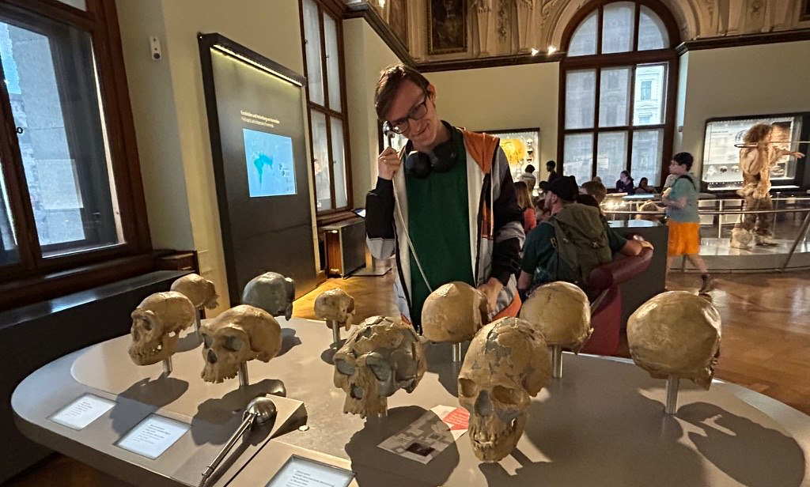
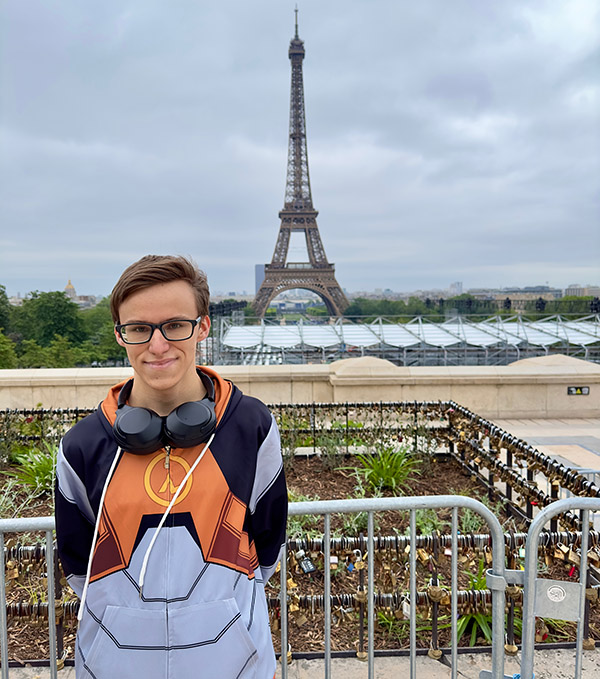
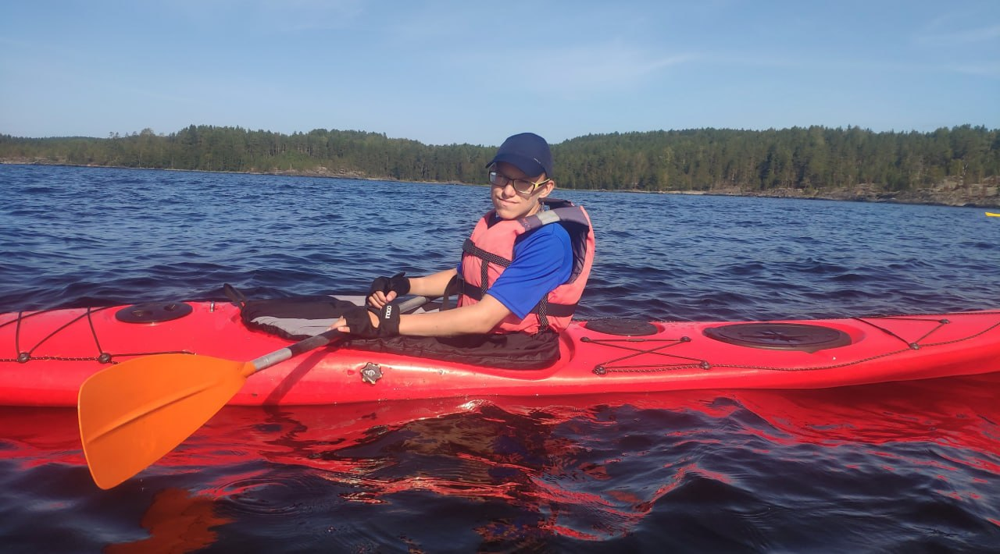

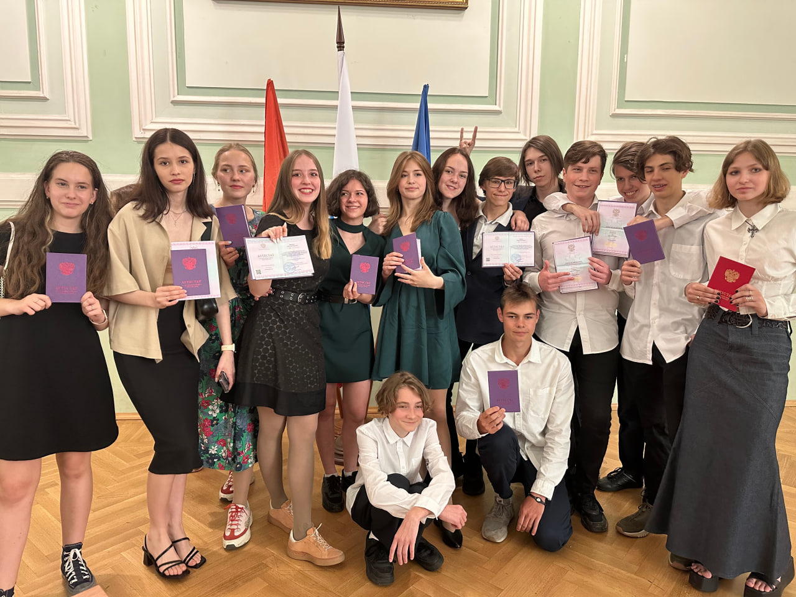
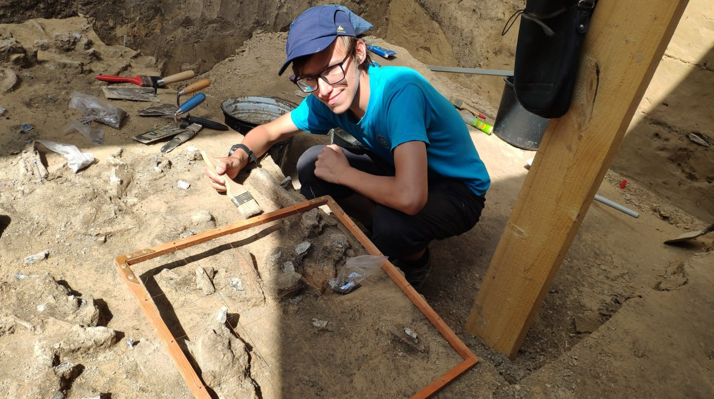

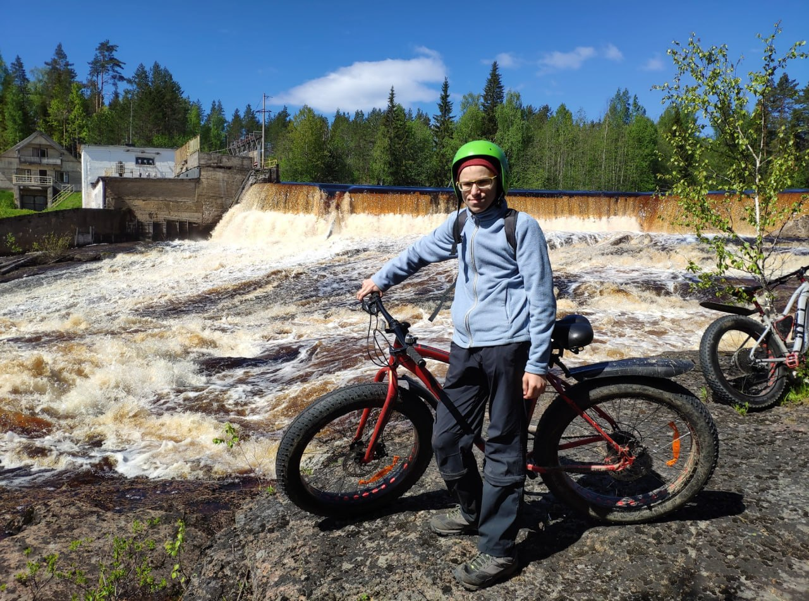
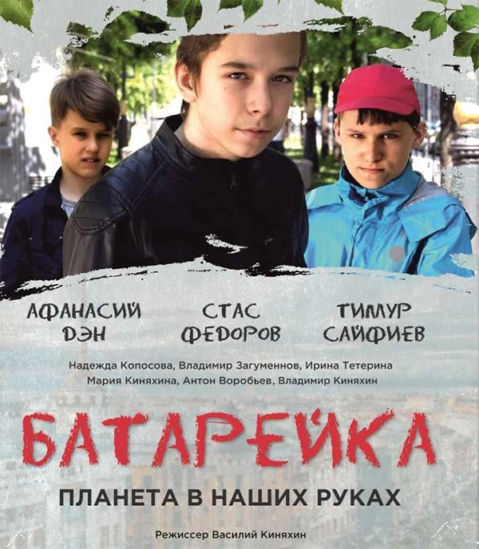
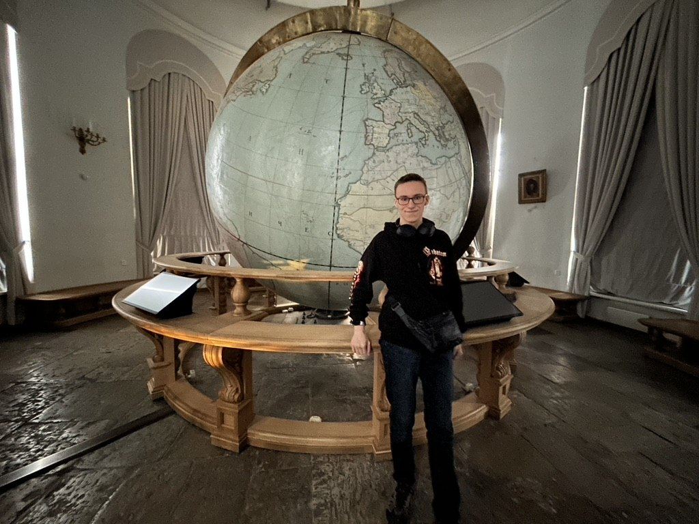
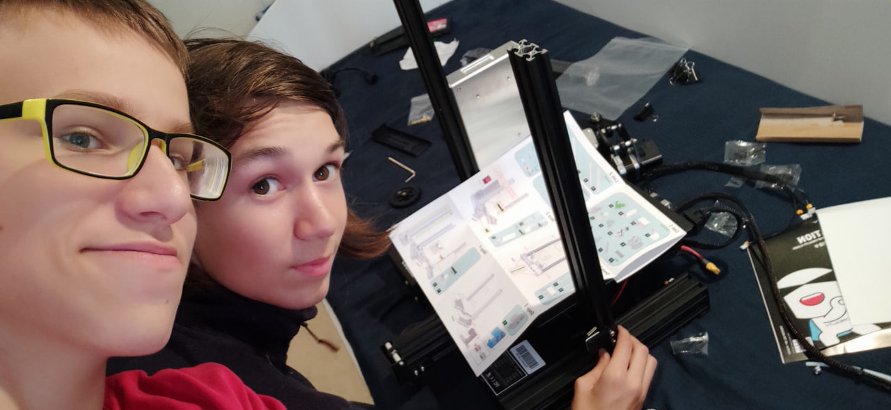
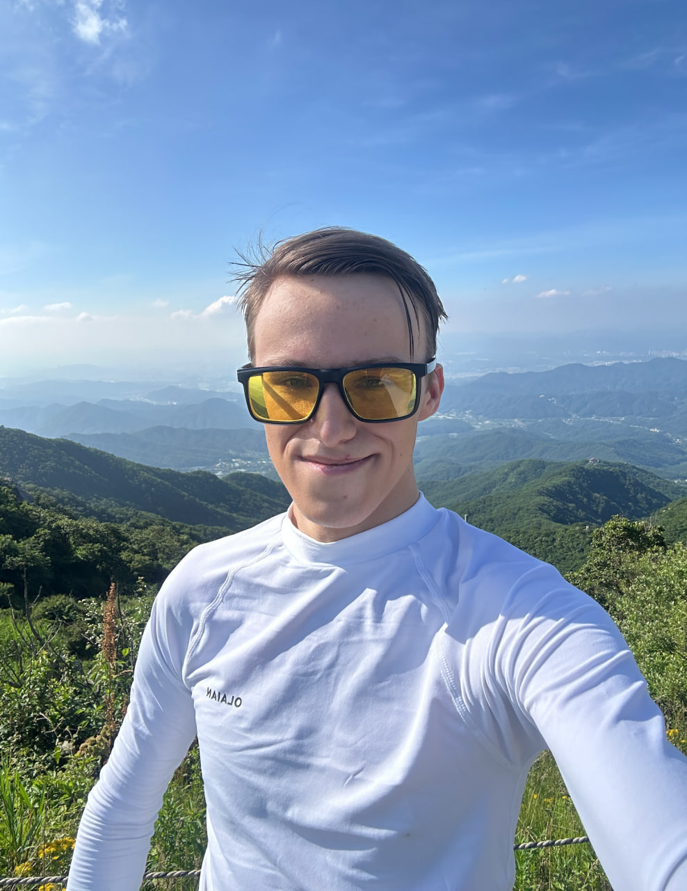